From a love of India's weaves to a saree boutique in North Kellyville. This is how Vastrakosh began, and the moments along the way.
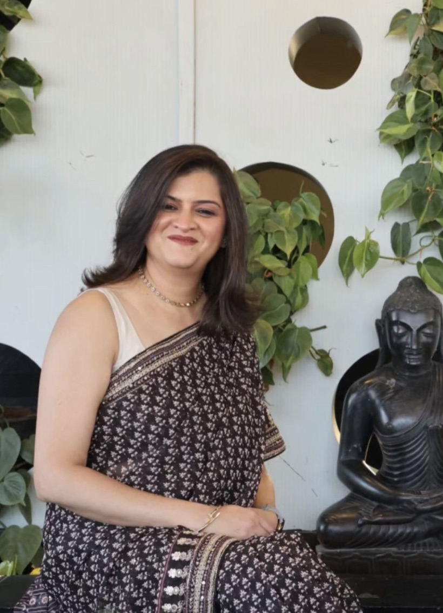
More than something we wear
A saree is more than something we wear; it is an expression of who we are, where we come from, and the stories we carry with us.
Every weave, every thread and every craft connects us to a place, a tradition and generations of artisans who have kept these beautiful traditions alive.
Through Vastrakosh, I wanted to create a space where these stories could continue to be woven, bringing the beauty of India’s rich textile heritage to our lives here in Australia.
Mugdha Joshi
वस्त्रकोशvastra, garment + kosh, treasury. A treasury of garments.
From our Facebook page
Our story in pictures
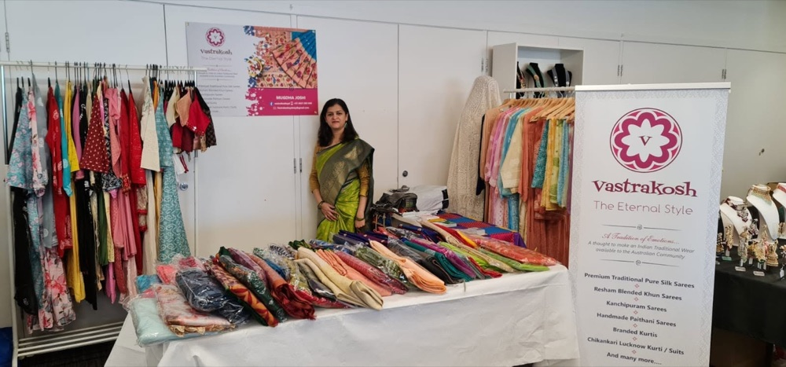
Our stall. Sarees on the table, kurtis on the rails, and a warm welcome for everyone who stops by.
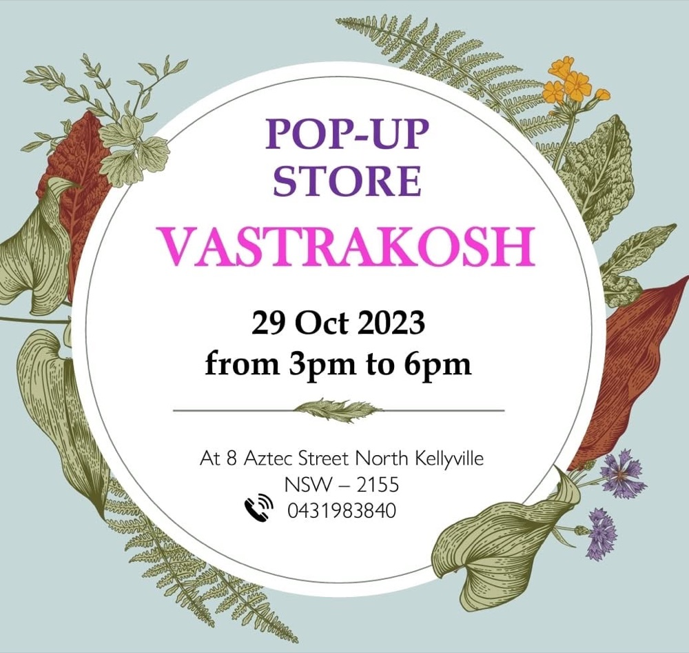
Pop-up store, 29 October 2023. Opening our doors at home in North Kellyville.
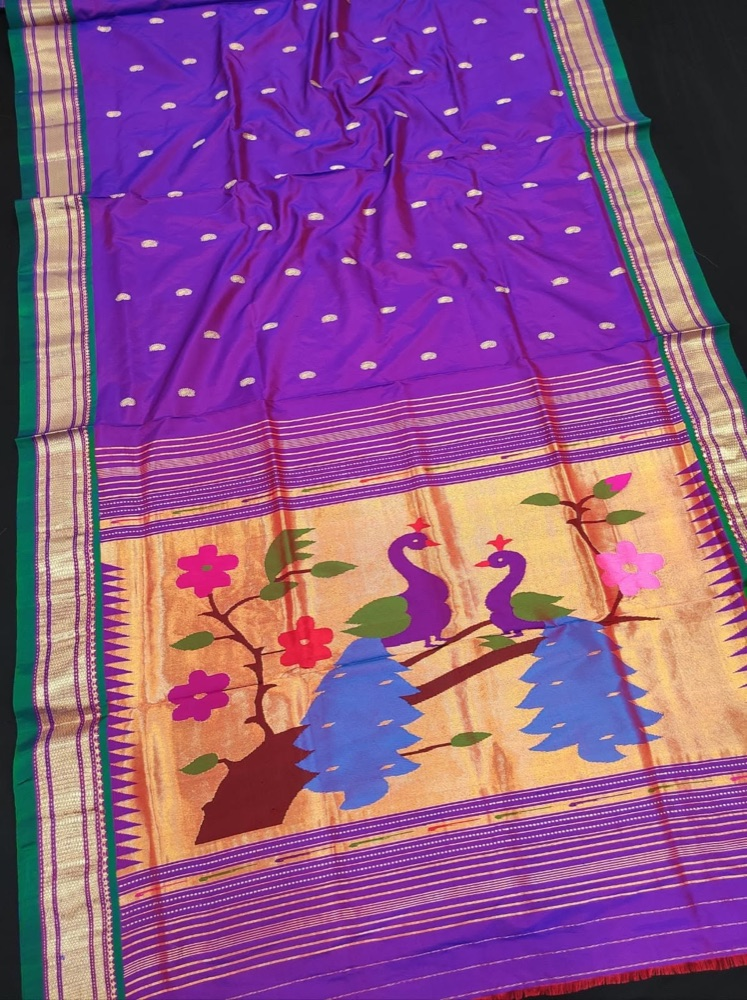
Paithani. Peacocks on the pallu, woven in Maharashtra.
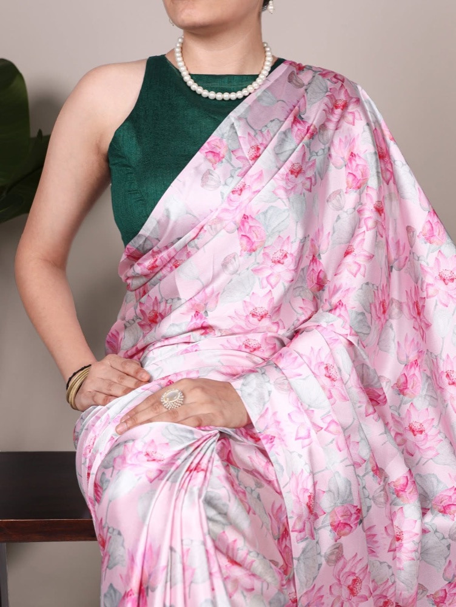
Styled for the season. Soft florals with a contrast blouse.
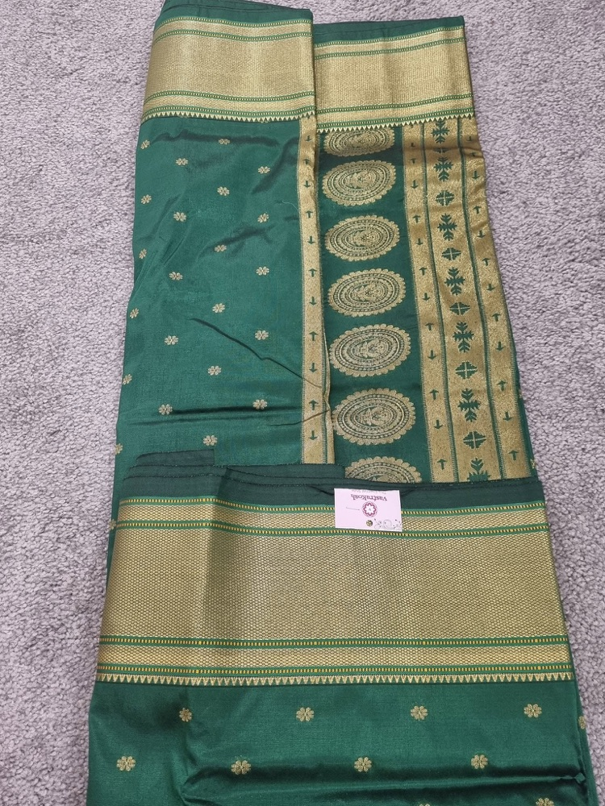
Green and gold. Silk with a rich zari pallu.
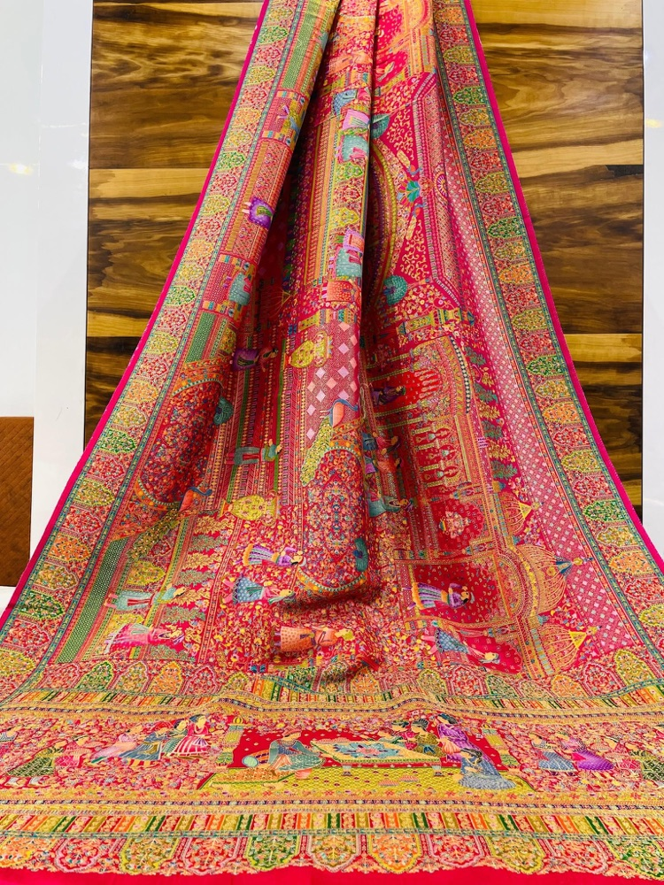
Woven detail. Every inch of the drape is patterned.
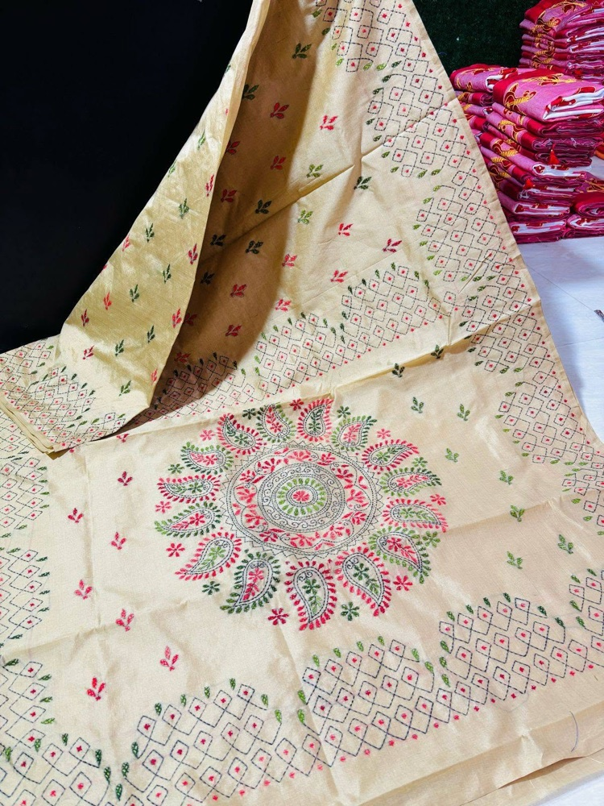
Hand embroidery. A mandala worked in pink and green thread.
India is in our roots. Australia is in our journey. Through Vastrakosh, we bring the richness of Indian textiles and crafts to our community in Sydney — creating a bridge between heritage and modern life.
IndiaAustralia
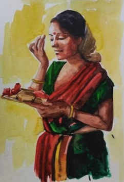
I.
Rooted in ritual
It begins at home, with a morning prayer, a puja thali and a red-bordered saree.
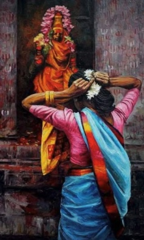
II.
Carried in faith
Flowers in the hair before the temple. Traditions passed from mother to daughter.
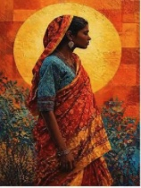
III.
The journey
Wherever we go, the saree comes with us, folded with memories of home.
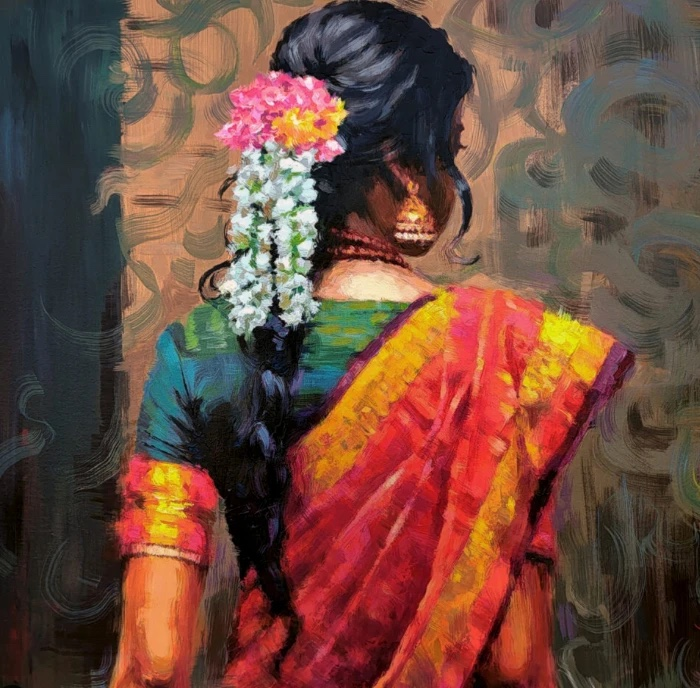
IV.
A new horizon
In Sydney, the same jasmine and the same silk. The tradition lives on, far from where it began.